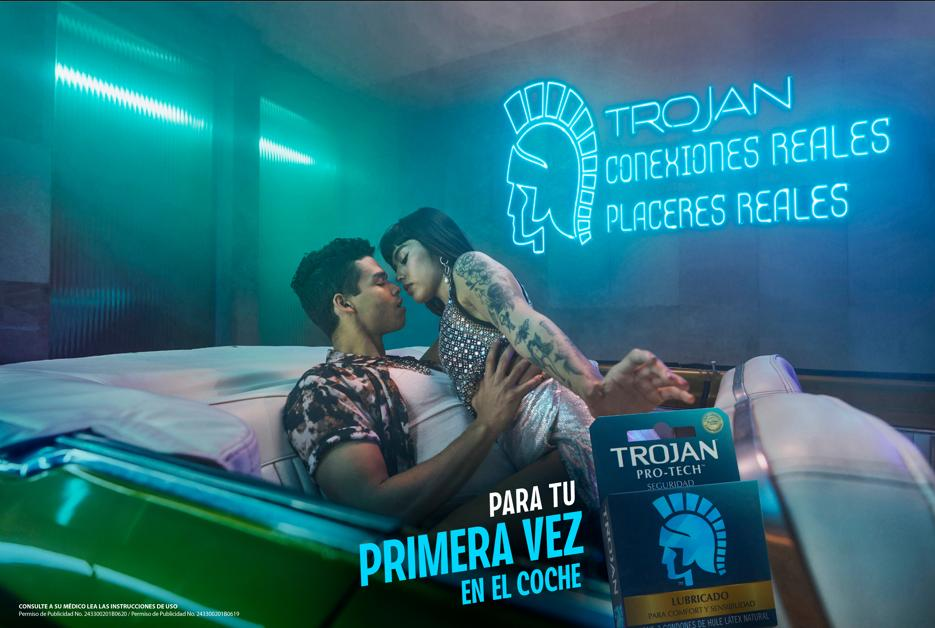

El principal reto es hablar de sexualidad en México, y no solo sobre el acto
sexual, sino sobre la multiplicidad de experiencias que se despliegan al
entender la sexualidad desde un espectro mayor.
Con "Conexiones reales, placeres reales", Trojan reafirma su compromiso con
la innovación y la educación, ofreciendo a los mexicanos las herramientas
necesarias para vivir su sexualidad de manera plena y segura.

Trojan, la marca número 1 de condones en Estados Unidos y una de las más grandes en México, busca un nuevo posicionamiento aprovechando el lanzamiento de su nueva imagen, acercándose a lo que sus consumidores sienten o quieren sentir. Con un posicionamiento diferente, más auténtico, evolucionado e inclusivo como la sociedad mexicana actual, la marca lanza 6 anuncios gráficos que muestran el momento preciso en el que la pasión y la conexión necesita pasar al siguiente nivel, para el cual uno de los protagonistas de la campaña busca la caja de condones para logar la seguridad que desea, y las sensaciones y experiencias más intensas que harán ese momento explotar al máximo.
El principal reto es hablar de sexualidad en México, y no solo sobre el acto sexual, sino sobre la multiplicidad de experiencias que se despliegan al entender la sexualidad desde un espectro mayor. Para ello, FCB Newlink ha desarrollado una campaña en la que se entiende el placer femenino y la masculinidad desde una conexión más emocional, logrando conectar con un nuevo mindset. Trojan llega a entender el placer individual para, de esta forma, acompañar en la fusión con la pareja, sin dejar a un lado la educación sexual más allá de la reproducción.
Motivados por la libertad, la aventura y la adrenalina, Trojan sigue comprometido con la seguridad e innovación. A través de sus condones, ofrece diferentes experiencias y protección tanto para él como para ella y para ellxs. Trojan existe para que descubras, explores y expandas el autoconocimiento de tu sexualidad desde la libertad y el placer.
"Cuando estás en el momento de la pasión en el que lo siguiente es ponerte un condón o ponérselo a tu pareja, normalmente es una pausa que puede interrumpir la conexión. Pero Trojan se muestra como ese aliado que está a la mano y te da la confianza de que lo que sigue será aún mejor con sus texturas, sensaciones intensas y sobre todo, la seguridad de que puedes ser tú plenamente." -Juan Montes, director creativo de la campaña.
Trojan invita a todos a unirse a esta conversación abierta y honesta sobre la sexualidad, rompiendo tabúes y construyendo una sociedad más informada y libre. Con "Conexiones reales, placeres reales", Trojan reafirma su compromiso con la innovación y la educación, ofreciendo a los mexicanos las herramientas necesarias para vivir su sexualidad de manera plena y segura.